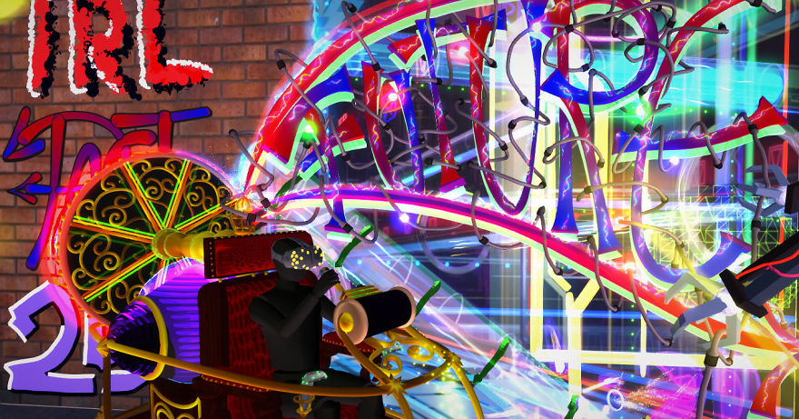

Bring your Google Poly and Sketchfab content into ARize for free
ARize

With the growth of Augmented and Virtual reality technology, the scope of 3D content’s implementation became wider than it used to be.Now, searching and discovering various 3D objects are not enough for their absolute and efficient implementation, that’s why AR and VR seem to become an integral part for 3D platforms such as, Google Poly and Sketchfab. ... continue reading »